ESG Recognition and Milestone
-
2026
-
A list of CDP in Water Security and Climate Change and Supplier Engagement Leader
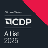
-
Top 15% of S&P Global Sustainability Yearbook
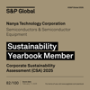
- Top 6%~20% in the 12th Corporate Governance Evaluation by TWSE
- Recognized as Top 100 Global Innovator 2026
-
Included into Dow Jones Sustainability World Index
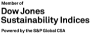
-
Rated Prime Level by the ISS ESG's Corporate Rating for the 6th consecutive year
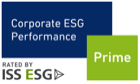
-
MSCI ESG 'A' Rating
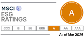
Disclaimer - Sustainalytics ESG Rating 20.92 (Medium Risk)
-
A list of CDP in Water Security and Climate Change and Supplier Engagement Leader
-
2025
- Top 100 Taiwanese Sustainable Manufacturing Companies & Sustainability Reporting Award & four Leadership Awards
-
Gold Award as a Best Workplace
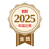
- 19th Public Construction Golden Safety Award
-
AWS Platinum Class Certification
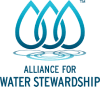
- Continuously included in the Taiwan Employment Creation 99 Index
- Selected in the TWSE RAFI® Taiwan High Compensation 100 Index for the 11th consecutive year
- Top 5% in the 11th (2024) Corporate Governance Evaluation; ranked in the top 10% among listed electronic companies with market value exceeding NT$10 billion
- Top 100 Global Innovators 2025 by Clarivate
-
Selected as an S&P Sustainability Yearbook Member—ranking top 15% of the semiconductors industry
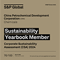
-
Achieved Leadership Level scores in both Climate Change and Water Security and Supplier Engagement Assessment
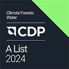
-
2024
- Included into Dow Jones Sustainability World Index
- Invest in PieceMakers to Develop Customized Ultra-high-bandwidth Memory
- Top 100 Taiwanese Sustainable Manufacturing Companies, Corporate Sustainability Reports Platinum Award and three Leadership Awards
-
MSCI ESG 'AA' Rating
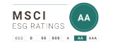
-
Gold Award as a Best Workplace
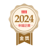
- Recognized as an outstanding enterprise in the Proactive Evaluation of Occupational Health and Safety Performance Disclosure in Corporate Sustainability Reports
- Honored with Taiwan Circular Economy Outstanding Enterprises Award by Ministry of Environment—Silver Award in the Recycling Category
- Collaborates with Kioxia to Develop Vertical Channel Transistor DRAM Technology
-
Excellence Corporate Social Responsibility Award by CommonWealth Magazine
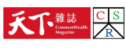
-
AWS Platinum Class Certification

-
Top 5% in the 10th Corporate Governance Evaluation by TWSE

- Recognized as Top 100 Global Innovator
-
National Quality Award – Outstanding Business Award
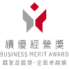
-
Top 10% of S&P Global Sustainability Yearbook
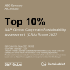
-
Double A List in CDP's Climate Change & Water Security
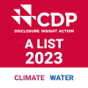
-
A level of the Taiwan Intellectual Property Management System
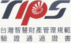
-
2023
- Included into Dow Jones Sustainability World Index and Emerging Markets Index
-
Top 10 Taiwanese Sustainable Manufacturing Companies & eight Leadership Awards

-
Bronze Award of the Taipei Golden Eagle Micro-Movie Festival
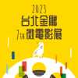
- Received CommonWealth Magazine's Excellence in Corporate Social Responsibility Award
- Continuously included in the Taiwan Employment Creation 99 Index
-
Continuously awarded "FTSE4Good TIP Taiwan ESG Index" and "TWSE Corporate Governance 100 Index"

-
Top 5% in the 9th Corporate Governance Evaluation by TWSE
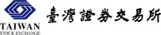
-
Recognized as Top 100 Global Innovator by Clarivate

-
Top 5% S&P Global ESG Score
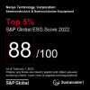
-
2022
-
CDP Water Security A List; Climate Change Leadership Level
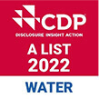
-
Once Again Included into Dow Jones Sustainability World Index and Emerging Markets Index
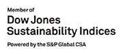
-
Joins Semiconductor Climate Consortium (SCC) as Founding Member
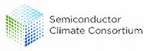
-
TCSA Awards: Top10 TCSA Model, Corporate Sustainability Reports Platinum Award, Growth Through Innovation Leadership, Water Management Leadership, Circular Economy Leadership, Information Security Leadership, Transparency and Integrity Leadership, Creative Communication Leadership
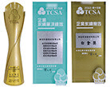
-
Received 2022 GCSA Outstanding Professional Award
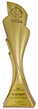
-
Validated by the SBTi
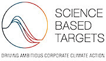
-
Received the 1st Enterprise Classic Award and Woman Power Award from New Taipei City Government
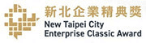
-
Released the Company's 1st TCFD Report
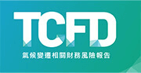
-
Continuously awarded "FTSE4Good TIP Taiwan ESG Index" and "TWSE Corporate Governance 100 Index"
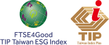
- Top 5% in the 8th Corporate Governance Evaluation by TWSE
- Signed 250 million kWh renewable energy purchased agreement
-
Sustainability Award Bronze Class in S&P Global 2022 CSA
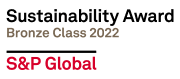
-
Joined 「TALENT, in Taiwan」
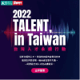
-
Signed SBTi Commitment Letter
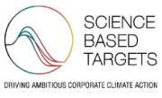
-
CDP Water Security A List; Climate Change Leadership Level
-
2021
-
Named to the Dow Jones Sustainability World Index and Emerging Market Index
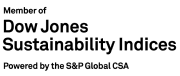
-
CDP Climate Change A List; Water Security Leadership Level
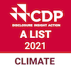
-
Won the 3rd National Enterprise Environmental Protection Award
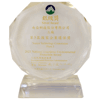
-
TCSA Awards:Top10 TCSA Model, GCSA on Sustainability Reporting, Corporate Sustainability Reports Platinum Award, Growth Through Innovation Leadership, Climate Leadership, Circular Economy Leadership, Supply Chain Leadership, Talent Development Leadership, Information Security Leadership, and Social Inclusion Leadership
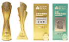
-
Received the 2021 Electronics Invoice Excellent Business Award
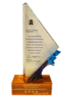
-
Received the Taiwan Sustainability Action Awards (TSAA)
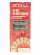
-
Received CommonWealth Magazine's Excellence in Corporate Social Responsibility Award
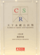
- Top 5% in the 7th Corporate Governance Evaluation by TWSE
- Officially become supporter for TCFD
- Purchase10.4 million kWh of renewable energy (2021, 2.52 million kWh; 2022, 7.88 million kWh)
-
17th Global Views CSR Award Model in ESG Integrated Performance
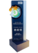
-
Green Factory Label by IDB, MOEA
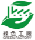
- Sustainability Award Bronze Class in S&P Global CSA
-
Named to the Dow Jones Sustainability World Index and Emerging Market Index
-
2020
- Established Risk Management Committee as a Functional Committee under the BOD
- Held the Nanya Technology Sustainability Supply Chain Conference
- Purchased 3.62 million kWh of renewable energy
-
National Sustainable Development Award by the Executive Yuan
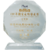
-
Rated Prime Level by the ISS ESG's Corporate Rating
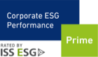
-
RobecoSAM Sustainability Award - Silver Class
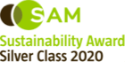
-
7 TCSA awards presented by the TAISE

-
Awarded the CommonWealth Magazine's Corporate Social Responsibility Award
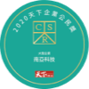
-
CDP Climate Change A List; Water Security Leadership Level
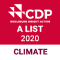
-
Top 5% in the 6th Corporate Governance Evaluation by TWSE
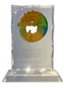
-
Talent Quality-management System (TTQS) Gold Certificate
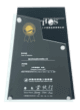
-
Outstanding Healthy Workplace Award by Health Promotion Administration, Ministry of Health and Welfare
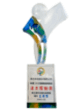
- Green Procurement Corporation by Environmental Protection Department, New Taipei City Government
-
2019
-
Received the ISO-27001: 2013 Information Security Management System Certification
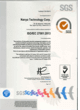
- Completed a real-time monitoring energy management platform
- Passed the system conversion certification of ISO 45001:2018 Occupational Safety and Health Management System
-
Named to the Dow Jones Sustainability Emerging Markets Index
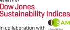
- RobecoSAM Sustainability Award – Bronze Class
- Received 5 TCSA Awards presented by the TAISE
- Awarded CommonWealth Magazine's New Star Award in Excellence in CSR
- CDP's Climate Change Category: Leadership Level
- Outstanding Enterprise Innovation Award by the MOEA
- National Talent Development Award by Ministry of Labor
- Taiwan iSports certification from the Sports Administration of the Ministry of Education
- Happy Enterprise Award voted by 1111 Job Bank
- New Taipei City Labour Safety and Health Award
- New Taipei City Smart Energy-Saving Outstanding Enterprise Award
- Launched AI and Smart Manufacturing Talent Cultivation Plan
- Participated in the social engagement by started the 4U project on talent cultivation, environmental protection, humanistic care, and community harmony
- Establish industrial talent courses with the National Taiwan University of Science and Technology
-
Received the ISO-27001: 2013 Information Security Management System Certification
-
2018
- Formally established the Sustainable Development Committee
- Implemented the TCFD framework to identify and quantify climate related risk
- Supply chain evaluation included sustainability development indicators
- Selected in the Dow Jones Sustainability Emerging Markets Index
-
Awarded by the TCSA with Top 50 Corporate Sustainability Awards and Corporate Sustainability Report Golden Award

- Ranked in the Top 5% of the 4th Corporate Governance Evaluation by Taiwan Stock Exchange Corporation
- Golden Certificate of Talent Quality-management System (TTQS)
- Awarded Thomson Reuters' Top 100 Global Technology Award
- Badge of Accredited Healthy Workplace by Ministry of Health and Welfare
- Acquire ISO 50001 - Energy Management System Certification
- Senior executive personal performance and contribution evaluations include sustainability indicators
-
2017
- Nanya Technology's new headquarters and fab acquired Green Building Label by ABRI, Ministry of Interior
- Awarded New Taipei City Environmental Impact Assessment Excellent Development Selection – Gold Level
- Honored by the TCSA with Top 50 Corporate Sustainability Award, Corporate Sustainability Report Golden Award, and Growth through Innovation Award
- Introduce 20nm CLEAN manufacturing process
- Promoted Life Cycle Assessment (LCA) to review product environmental footprints
- Implemented greenhouse gas scope 3 inventory and obtained ISO 14064 Certification
- Established Green Product Management Standard